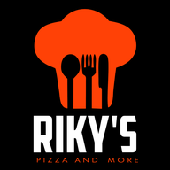

Dodirni Dijeli u donjoj traci Safarija.
Skrolaj niže i odaberi Dodaj na početni zaslon .
Gore desno potvrdi Dodaj. Ikona Pult je na zaslonu.
Otvori izbornik preglednika ⋮ (gore desno).
Odaberi Instaliraj aplikaciju ili Dodaj na početni zaslon.
Dodaj na zaslon s ove stranice. Ako dodaješ s naslovnice (rikyspizza.com.hr), ikona otvori jelovnik za goste, a ne pult.
Otvori pult sadaPult vidi samo hranu u pripremi —
bez imena, adresa i telefona kupaca.